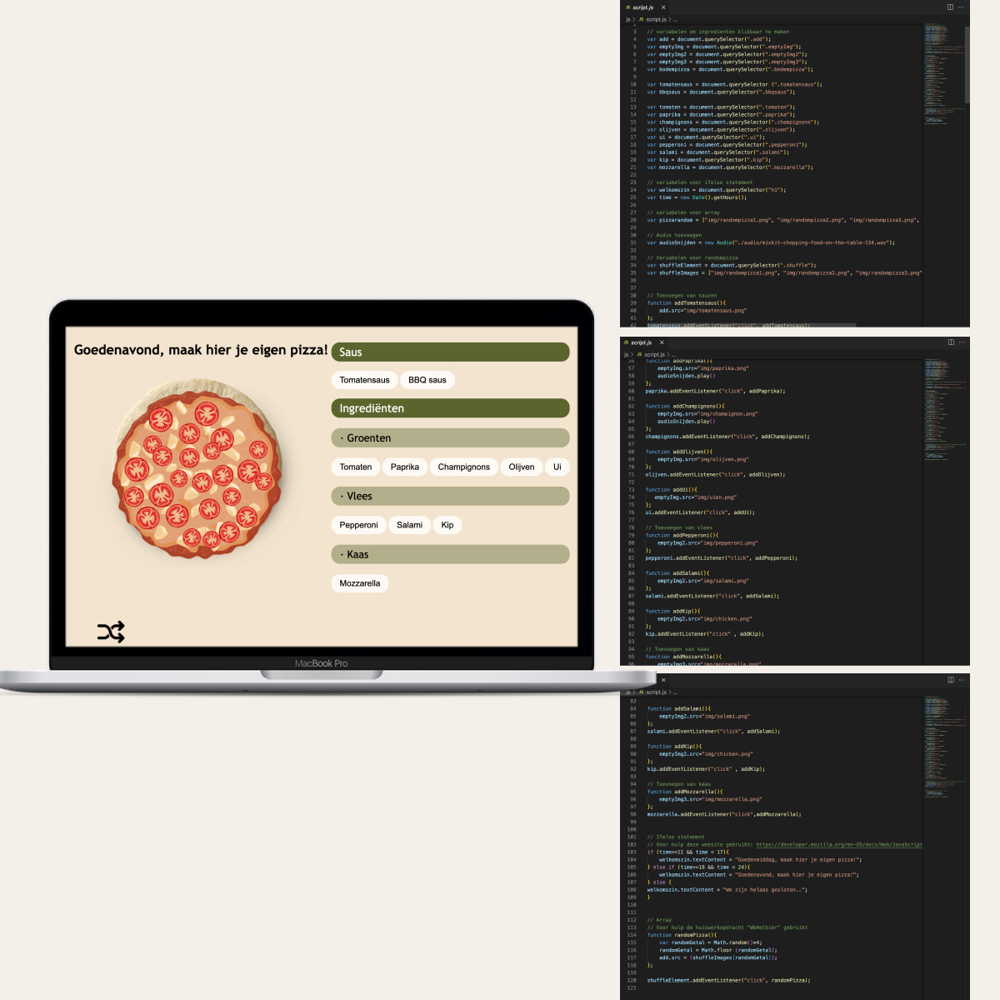

Hoi!
Ik ben Isa en volg de opleiding Communication & Multimedia design aan de Hogeschool van
Amsterdam. Via deze website die ik zelf heb gecodeerd met HTML/CSS neem ik jullie mee door een aantal
projecten die ik heb gedaan tijdens mijn studie.
Skills
Bij de opleiding CMD wordt je opgeleid op verschillende gebieden. Ik heb hierdoor kennis op het gebied van Interaction Design, Front-end Development en Visual Interface Design. Mijn focus ligt vooral op Interaction Design en Visual Interface Design maar vind het ook nog steeds interessant om mij verder te ontwikkelen op het gebied van Front-end Development.

Projecten

